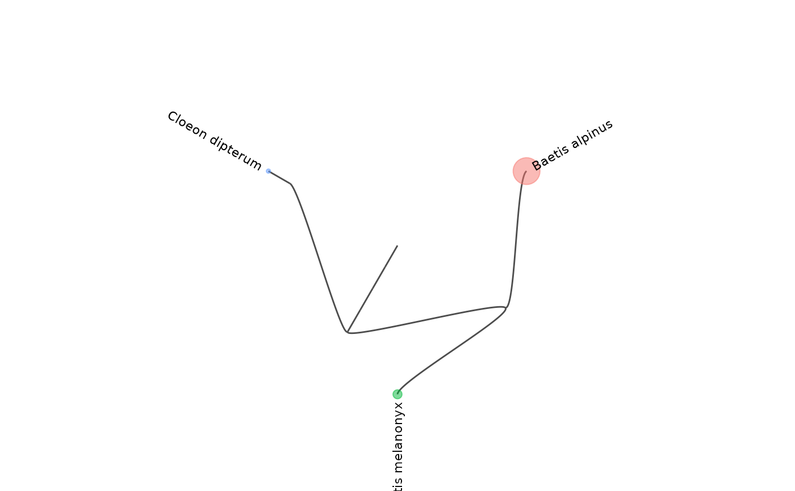

Represent the hierarchical structure of the taxonomic information of a reference database as a tree.
refdb_plot_tax_tree(
x,
leaf_col = NULL,
color_col = NULL,
freq_labels = 0,
expand_plot = 0.5
)a reference database.
a column name referring to the taxonomic level
for the leaves of the tree. If not provided (NULL)
the function tries to find a relevant level.
a column name referring to the taxonomic level
for the color of the leaves (must be higher or equal to the level
of leaf_col). If not provided (NULL)
the function tries to find a relevant level.
a numeric value to adjust the number of printed labels (minimum frequency). Default is zero which means all non-NA labels are printed.
a value to expand the limits of the plot. Useful if the labels are too long.
A ggplot2 (ggraph) object. This means the plot can be further customized using ggplot2 compatible functions.
The underlying graph is computed using the non-exported function
igraph_from_taxo.
lib <- read.csv(system.file("extdata", "baetidae_bold.csv", package = "refdb"))
lib <- refdb_set_fields_BOLD(lib)
refdb_plot_tax_tree(lib)
#> Selected rank columns for the tree: phylum_name, class_name, order_name, family_name, subfamily_name, genus_name, species_name
#> Selected rank column for the color: species_name
#> Warning: There was 1 warning in `dplyr::group_by()`.
#> ℹ In argument: `dplyr::across()`.
#> Caused by warning:
#> ! Using `across()` without supplying `.cols` was deprecated in dplyr 1.1.0.
#> ℹ Please supply `.cols` instead.
#> Warning: Removed 7 rows containing missing values or values outside the scale range
#> (`geom_text()`).
